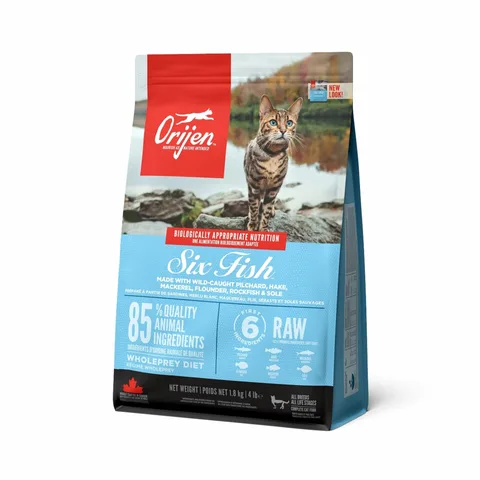

ORIJEN
ORIJEN Six Fish
乾飼料・無穀・魚肉配方・1.8kg／5.4kg 袋
比歷史低價高 53%比 30 天前便宜 9.6%
90 天價格水準：偏高（最低 €12.34/kg ～ 最高 €20.86/kg，依過去 19 天每日最低價）
商店報價（依每單位價排序）
| 店家 | 規格 | 總價 | 每單位價 | 條件 | 購買 |
|---|---|---|---|---|---|
| Petfooddiscount.nl | 1x1.8kg | €33.95 | €18.86/kg | 運費 €4.95 2026-11-28 live browser：Six Fish 1.8kg €33.95（建議價 €40.49），價格不變，有貨；黑五碼失效後成為本品最佳價；免運 €49。 | 前往 → |
| Huisdieren.nl | 1x1.8kg | €36.25 | €20.14/kg | 滿 €59 免運・運費 €6.95 2026-11-28 live browser：1.8kg €36.25（原 €40.49）一次價不變，有貨；黑五碼 BLACKFRIDAY2026 已失效，最佳價由昨日折後 €32.63 改為 Petfooddiscount.nl €33.95。€59 以下運 €6.95。 | 前往 → |
| Petgamma | 1x5.4kg | €66.62 | €12.34/kg | 運費見 Petgamma；ShopBuddies 5% 經 ShopBuddies 返現 €2.87 沿用 2026-11-07 報價 | 前往 → |
| Pharmapets | 1x1.8kg | €35.81 | €19.89/kg | 滿 €39 免運・運費 €3.99 沿用 2026-11-07 報價 | 前往 → |
| Petgamma | 1x1.8kg | €35.84 | €19.91/kg | 滿 €50 免運 經 ShopBuddies 返現 €1.55 沿用 2026-11-07 報價 | 前往 → |
| Medpets | 1x1.8kg | €37.55 | €20.86/kg | 滿 €69 免運・運費 €4.95・最低訂單 €14.95 需訂閱定期配送 沿用 2026-11-17 報價 2026-11-17 live browser：1.8kg €39.95 一次價／Herhaal €37.55，有貨；與 2026-11-15 相同，無變化。 | 前往 → |
| Brekz | 1x1.8kg | €39.99 | €22.22/kg | 運費未知 沿用 2026-11-25 報價 2026-11-25 live browser：Brekz 搜尋 ORIJEN 核實：Six Fish 1.8kg €39.99 有貨；免運門檻等未在搜尋頁顯示，未核實。Brekz ORIJEN 今日首次核實（此前連續多日 Cloudflare 擋，今日換環境後清除）。注意：Petfooddiscount €33.95 仍低於本品。 | 前往 → |
| bestpetfoods | 1x5.4kg | €70.25 | €13.01/kg | €50 起免運，否則 €5.95；定期配送 95 折不計返現 沿用 2026-11-15 報價 未核實 2026-11-15 curl 重抓頁面，確認頁面仍含上次價格字串（未逐變體結構化解析、庫存／運費／促銷沿用 11-13）；價格視為同 11-13；返現率沿用（ShopBuddies zooplus 1.33%/新客8%、Medpets 4%、Brekz 3.5%、YesCashback bestpetfoods 4% 今日重查未變；CashbackXL 頁為 JS 未能讀取＝未確認） | 前往 → |
| Milo | 1x5.4kg | €73.95 | €13.69/kg | 滿 €49 免運 沿用 2026-11-15 報價 未核實 2026-11-15 curl 重抓頁面，確認頁面仍含上次價格字串（未逐變體結構化解析、庫存／運費／促銷沿用 11-13）；價格視為同 11-13；返現率沿用（ShopBuddies zooplus 1.33%/新客8%、Medpets 4%、Brekz 3.5%、YesCashback bestpetfoods 4% 今日重查未變；CashbackXL 頁為 JS 未能讀取＝未確認） | 前往 → |
| Zoofera | 1x5.4kg | €84.62 | €15.67/kg | 免運 沿用 2026-11-15 報價 未核實 2026-11-15 curl 重抓頁面，確認頁面仍含上次價格字串（未逐變體結構化解析、庫存／運費／促銷沿用 11-13）；價格視為同 11-13；返現率沿用（ShopBuddies zooplus 1.33%/新客8%、Medpets 4%、Brekz 3.5%、YesCashback bestpetfoods 4% 今日重查未變；CashbackXL 頁為 JS 未能讀取＝未確認） | 前往 → |
| bestpetfoods | 1x1.8kg | €38.63 | €21.46/kg | €50 起免運，否則 €5.95；定期配送 95 折不計返現 經 YesCashback 返現 €1.32 沿用 2026-11-15 報價 未核實 2026-11-15 curl 重抓頁面，確認頁面仍含上次價格字串（未逐變體結構化解析、庫存／運費／促銷沿用 11-13）；價格視為同 11-13；返現率沿用（ShopBuddies zooplus 1.33%/新客8%、Medpets 4%、Brekz 3.5%、YesCashback bestpetfoods 4% 今日重查未變；CashbackXL 頁為 JS 未能讀取＝未確認） | 前往 → |
| Zoofera | 1x1.8kg | €41.74 | €23.19/kg | 免運 沿用 2026-11-15 報價 未核實 2026-11-15 curl 重抓頁面，確認頁面仍含上次價格字串（未逐變體結構化解析、庫存／運費／促銷沿用 11-13）；價格視為同 11-13；返現率沿用（ShopBuddies zooplus 1.33%/新客8%、Medpets 4%、Brekz 3.5%、YesCashback bestpetfoods 4% 今日重查未變；CashbackXL 頁為 JS 未能讀取＝未確認） | 前往 → |
| PetShop24 | 1x1.8kg | €42.95 | €23.86/kg | 滿 €55 免運・運費 €5.75 沿用 2026-11-15 報價 未核實 2026-11-15 curl 重抓頁面，確認頁面仍含上次價格字串（未逐變體結構化解析、庫存／運費／促銷沿用 11-13）；價格視為同 11-13；返現率沿用（ShopBuddies zooplus 1.33%/新客8%、Medpets 4%、Brekz 3.5%、YesCashback bestpetfoods 4% 今日重查未變；CashbackXL 頁為 JS 未能讀取＝未確認） | 前往 → |